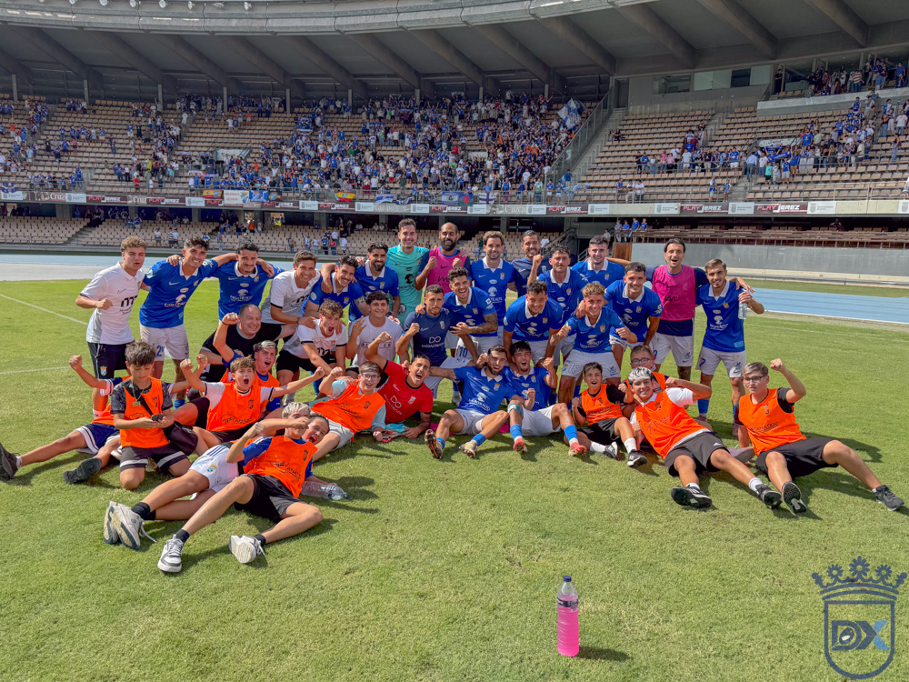
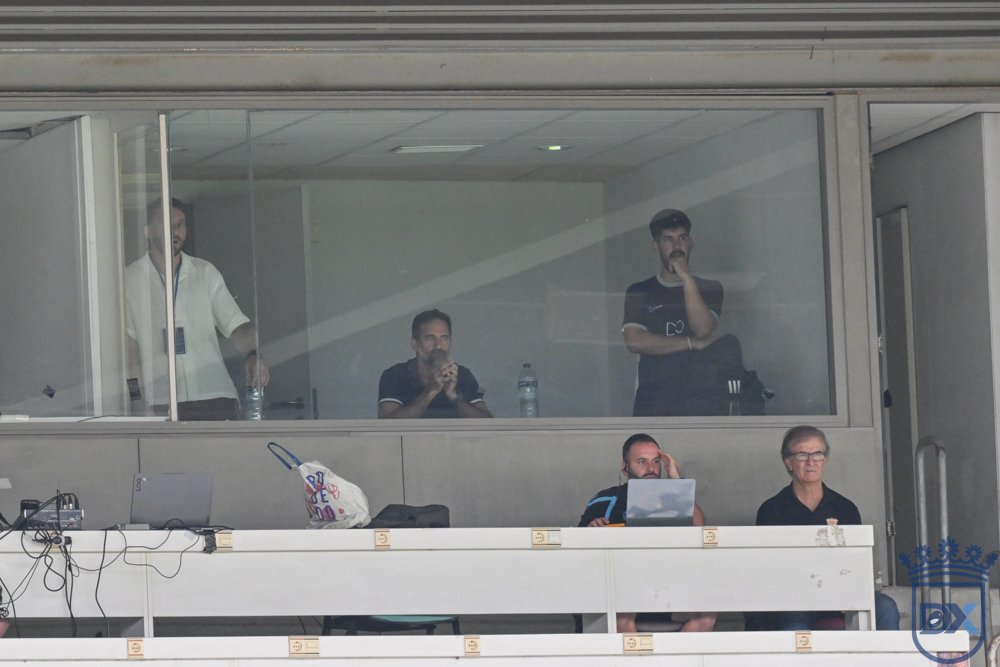
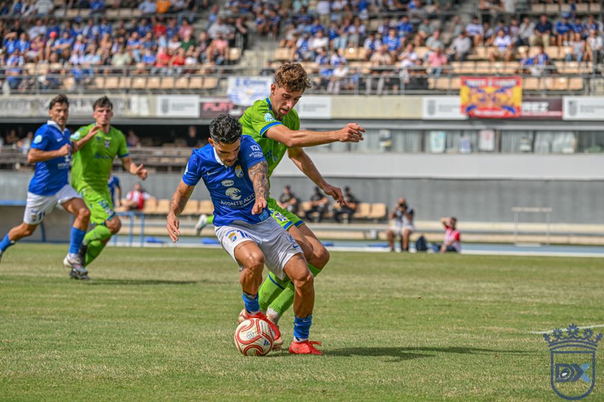
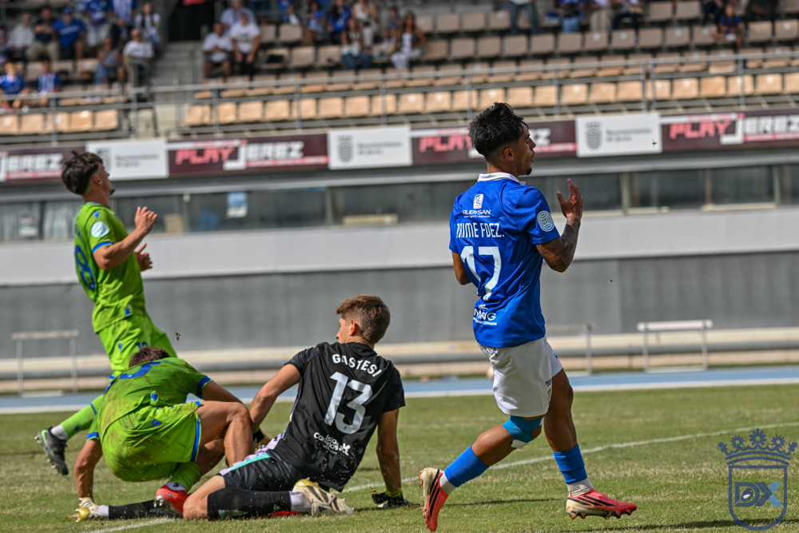

Remontada con sufrimiento: el Xerez CD logra sus primeros puntos de la temporada ante el Tenerife B (2-1)
Xerez CD 2 — 1 Tenerife B

Foto: Diario XerecistaJulito y Chuma voltean el tanto inicial de Omar Sánchez y regalan a Chapín el primer triunfo del curso, en una tarde en la que el nuevo técnico presenció el choque desde la grada
CHAPÍN. Había ganas de desahogo en Jerez, y el Xerez CD se lo concedió a su gente con una victoria sufrida, trabajada y más celebrada que brillante. El conjunto azulino superó por 2-1 al filial tinerfeño en el estreno de Abel Segovia, sustituto del destituido Xavi Molist, y rompió por fin su sequía de triunfos tras cuatro jornadas sin conocer la victoria. Ante un rival joven, descarado y que golpeó primero, se impusieron la insistencia, la creencia y el oficio de los locales.
Segovia estrena el cargo desde la grada
La primera sorpresa de la mañana no estuvo sobre el césped, sino fuera de él. Segovia, de origen sevillano, tuvo que seguir el partido desde la grada: el club aún no ha resuelto la liquidación pendiente con Molist y, sin ella, no pudo tramitarse la ficha del nuevo preparador. En su lugar, Juan Pedro Ramos se sentó en el banquillo y dirigió al equipo.

Foto: Diario XerecistaTampoco hubo revolución en la alineación. Pantoja bajo palos; Guille Campos, Manu Galán, Moi y Chacartegui en la zaga; Raúl López acompañado por primera vez este curso de Ismael en el pivote; y por delante, Zelu, Julito y Zequi, con libertad para intercambiarse posiciones, y Rubén Mesa en la punta.
Impulso inicial, golpe del filial
Como ocurre casi siempre tras un cambio de entrenador, el Deportivo salió enchufado, con presión adelantada sobre un adversario que regalaba balones. Zequi avisó desde la frontal (7') con un disparo que se fue por encima del travesaño. La respuesta canaria llegó hacia el cuarto de hora con un pase de Dylan a la espalda de la zaga que atrapó Pantoja, y el filial fue sacudiéndose el dominio local.
El mazazo llegó en el minuto 18. Tras un centro de Sergio Fernández, Óscar Bazaga encaró solo al meta y el contacto de Chacartegui bastó para que el árbitro señalara pena máxima. Omar Sánchez, goleador del cuadro insular, engañó a Pantoja con un lanzamiento templado y colocó el 0-1.
Una primera parte a ráfagas
El gol obligó a los azulinos a rehacerse, y lo hicieron a ráfagas, sin continuidad. Empujaron con ganas, pero sin encontrar el último pase ni un remate limpio. Moi, de cabeza, estuvo cerca de empatar tras un golpeo de Zequi, aunque el balón se marchó fuera por poco (25').
Mientras, el filial amenazaba con la contra. Una pérdida de Raúl López dejó a Bazaga ante Pantoja, que se hizo con el balón, y el delantero no vio a Omar completamente libre (36'). Llegaron los primeros pitos, con Zelu y Zequi cambiándose de banda sin encontrar caminos y una grada cada vez más inquieta. Una caída de Ismael en el área (43') no mereció penalti para el colegiado, y en el descuento una falta cercana, provocada por Galán, la envió Chacartegui por encima de la madera.

Foto: Diario XerecistaChuma entra y el partido cambia
Segovia, desde la distancia, necesitaba un giro, y Chuma saltó al campo por Rubén Mesa, discreto en la primera parte. El Tenerife B, consciente de su plan, cedió balón y terreno, dejando a los locales sin vías claras: ni en largo, ni por combinación, ni con pases filtrados entre líneas.
Pero la insistencia tuvo premio en el minuto 55. Guille Campos se internó, el portero rechazó sin atrapar y el balón quedó muerto en zona de peligro. Allí apareció Julito, atento y bien situado, para empujar el 1-1. El tramo más espinoso estaba superado.
Cambios, nervios y el golpe definitivo
Ambos técnicos movieron el banquillo. Segovia refrescó ataque y medular, con Peregrina dando vida al juego, y el entrenador visitante, Mazinho, buscó oxígeno para un filial que ya pesaba menos, aunque siempre acechaba al contragolpe.
La recompensa llegó por un error inocente de los canarios en la medular. El balón llegó a banda hasta Jaime Fernández, que lo puso en el área pequeña, donde Chuma, como Julito en el primero, no perdonó. 2-1 en el minuto 79. Era la primera vez este curso que el Xerez se ponía por delante, y el delantero, uno de los más cuestionados, se quitó un enorme peso de encima mientras Chapín celebraba la alegría que reclamaba.
Aún pudo ser más amplio: en el 87', Jaime Fernández se plantó solo ante Gastesi tras una gran carrera y cruzó demasiado su disparo cuando la grada ya cantaba el tercero. Zelu también lo intentó, pero llegaba exhausto. Cinco minutos de añadido se hicieron eternos, aunque los tres puntos ya tenían dueño.

Foto: Diario XerecistaLa mano de Segovia, visible pese a la distancia
Aunque siguió el choque desde la grada, el estilo del nuevo técnico se dejó notar en varios detalles del juego azulino. El más llamativo estuvo en las bandas. Con Molist, laterales y extremos se colocaban muy abiertos, ocupando el mismo carril y restando espacio y desequilibrio. Con Segovia, el lateral mantiene la amplitud y el jugador de banda se mete por dentro, lo que generó más situaciones de uno contra uno y un buen número de centros al área. Uno de ellos acabó en el gol de Chuma que decidió el partido.
También llamó la atención el trabajo a balón parado. Todos los saques de esquina se botaron con trayectoria cerrada hacia la portería, y curiosamente ninguno buscó el primer palo, un detalle que habrá que seguir en las próximas jornadas.
Lectura final
El refrán de "entrenador nuevo, victoria segura" se cumplió. El equipo necesitaba ganar y lo hizo, y esa es la lectura principal de la jornada. A Segovia aún le queda mucho trabajo por delante, pero con una victoria en el bolsillo y unas primeras pinceladas de cambio en el juego por las bandas, el camino empieza de otra manera.
Ficha técnica
Xerez CD: Pantoja; Guille Campos (Víctor López, 76'), Moi, Manu Galán, Chacartegui; Raúl López, Ismael (Peregrina, 65'); Zelu, Julito (Isuskiza, 76'), Zequi (Jaime Fernández, 65'); y Rubén Mesa (Chuma, 46').
CD Tenerife B: Gastesi; Joel (Beiza, 84'), Bazaga (Dailos, 66'), Dylan, Ismael, Vila (Amara, 66'), Giovanni, Llorens, Omar Sánchez (Yerovere, 78'), Sergio y Josito (Dani, 78').
Goles: 0-1 (18') Omar Sánchez, de penalti. 1-1 (55') Julito. 2-1 (79') Chuma.
Árbitro: Carlos Agraz Díaz (Comité Extremeño). Amonestó a Chacartegui, Rubén Mesa, Raúl López, Ismael y Julito.
Incidencias: Quinta jornada del Grupo 4 de Segunda RFEF, disputada en Chapín ante 7.466 espectadores.
🇬🇧 Read in English ← Volver a la portada